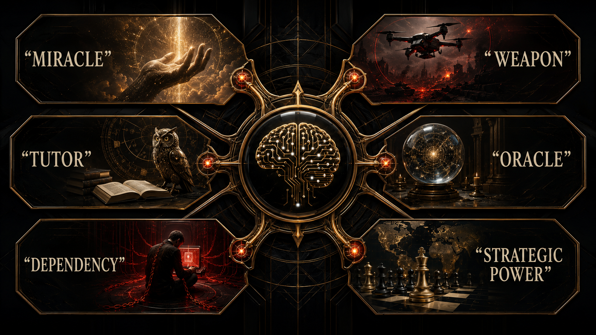

How the same system is sold as miracle, weapon, tutor, oracle, and dependency engine.

The public is told two things at once.
AI is dangerous enough to alter labor markets, war, politics, education, creativity, and the structure of knowledge itself.
AI is also convenient enough to place in your email, your browser, your therapist app, your homework flow, your coding workflow, your search box, your customer service line, your government paperwork, and your daily life with almost no friction.
Those two messages are not separate.
They are the business model speaking in stereo.
The first message produces awe.
The second message produces habit.
Awe gives the system prestige.
Habit gives it surface area.
That is why AI enters culture with such a strange energy. It is sold like a moon landing and adopted like a browser plugin. One minute the language is civilizational. The next minute the same system is folded into homework, coding, flirting, note-taking, venting, and search as if it were just another convenience patch for a tired population.
Together they create dependence fast enough that the public often starts using the tool long before it has a stable political language for what the tool is, how it was built, who governs it, or why certain firms are allowed to narrate both the danger and the salvation at the same time.
That is why this chapter uses the word gospel. Not because the systems are literally religious. Because they are marketed through a blend of warning, promise, inevitability, and submission. Respect the power. Use the power. Fear the power. Trust the power. Build on the power. Don’t ask too many annoying structural questions while integrating the power into your workflow.
The contradiction is doing real work.
If AI is framed as epochal, critics can be made to sound small-minded or unserious.
If AI is framed as cheap, friendly, and already everywhere, resistance can be made to look impractical.
That is a powerful one-two punch.
It turns political argument into cultural lag.
And because some technical progress is genuinely real, the rhetoric never has to be totally fake to become manipulative. That is important. This chapter is not anti-progress cosplay. It is not pretending every advance is smoke. The point is subtler and more useful: real progress can still be packaged in ways that normalize enclosure, hide subsidy, flatten complexity, and train the public to confuse access with empowerment.
The cheapness story is a good example. Public discourse often swings wildly between “AI is going to remake civilization” and “AI is basically free, just use it.” But systems that consume massive infrastructure, talent, energy, and strategic investment are not magically cheap in a deep economic sense just because a consumer tier is subsidized or underpriced in a race for habit formation. A thing can feel cheap at the user interface while remaining brutally expensive in the political economy that sustains it.
That is why the phrase circular economy keeps floating around the edges of this project. There are moments when the AI story starts sounding less like normal market efficiency and more like a coordinated burn to buy dependency, justify valuation, and reposition labor. The system is introduced as lower-cost than humans. Then, once habit deepens and the hierarchy stabilizes, the real cost structure becomes harder to ignore. The subsidy phase and the power phase are not the same phase.
You can already feel this at the culture level. The entry tier is framed like abundance. Try it. Draft faster. Search smarter. Think with the machine. But the social architecture around that cheapness points in another direction entirely: premium tiers, enterprise gates, private compute, privileged models, proprietary integrations, and the quiet normalization of the idea that better cognition itself will arrive in ranked subscription form. The assistant sounds democratic at the front door while the serious stack hardens into hierarchy in the back.
This is where a lot of younger users get emotionally cornered. They are not dumb. They can feel the relief. They know the tool helps. It unblocks drafts, kills blank-page panic, speeds up ugly admin work, and gives overstretched brains a place to throw first-pass thinking. But usefulness is exactly what makes enclosure sticky. If the system genuinely helps while also deepening dependence on a privately governed stack, critique starts sounding to exhausted people like a request to suffer on purpose.
The reasoning boom has to be heard through that same skepticism. Yes, some systems have gotten better at longer-chain task handling and more explicit structured inference. But the public-facing story often treats “reasoning” as if it were a clean metaphysical leap instead of a mix of real progress, packaging decisions, and product framing. The point is not to deny the gains. The point is to resist worship vocabulary when the same capabilities are still governed by the same private structures.
Use the tool, sure.
But don’t start kneeling because it got better at showing its work.
That line matters because a tired public is extremely vulnerable to competence theater. If you have been overworked, underfocused, under-rested, and algorithmically fragmented for years, a system that responds in calm paragraphs can feel almost sacred. It can feel like the first room in a long time where somebody is not shouting. That emotional effect is real. It is also politically dangerous when the calmness of the interface distracts from the ownership of the stack behind it.
That warning matters because the reasoning boom has a pseudo-spiritual edge to it. The machine now seems not just fast but patient, layered, almost contemplative. A public whose attention was already shredded by the feed is then invited to encounter a polished synthetic reasoner and feel gratitude, trust, maybe even reverence. The same ecosystem that helped wreck concentration gets to sell the patch for wrecked concentration.
That warning matters because many users are now being trained to relate to AI not just as software but as ambient authority. Ask it for a plan. Ask it for judgment. Ask it for emotional translation. Ask it to summarize the world because your own attention has been shredded by the systems that also normalized the AI layer. That is one of the darkest loops in the whole book: the feed weakens attention, then the model arrives as the helper for the damage the feed helped create.
The oracle shows up after the altar has already done its work.
That is why the public rhetoric of danger can be so politically useful even when it is sincere in parts. A system described as profound, risky, transformative, and civilization-scale can claim extraordinary deference. It can also argue for exceptional access control, exceptional legal latitude, exceptional talent capture, exceptional government attention, exceptional investment multiples, and exceptional patience from the public.
Then the convenience layer makes that exceptionalism feel normal.
This is what the dual-use gospel sounds like in practice:
“This technology is too important to regulate clumsily.”
“This technology is too dangerous to distribute openly.”
“This technology is too useful for you not to adopt immediately.”
“This technology is too inevitable for workers to resist.”
“This technology is too advanced for outsiders to question deeply.”

Those claims do not always come in one speech, but they reinforce one another.
And the public, already exhausted and cognitively overloaded, often meets them in the most disarmed state possible: by trying the tool before understanding the doctrine.
That disarmed state is the market opportunity. By the time a society begins asking whether the stack is too concentrated, too subsidized, too extractive, or too entangled with public power, millions of people may already feel they cannot write, search, code, study, or plan in quite the same way without the system nearby. Dependence arrives socially before constitutional language arrives politically.
That is how the habit outruns the politics.
That is how dependence outruns judgment.
That is how the machine enters daily life while the deeper argument is still being treated like an optional think-piece problem for specialists.
The book is pushing against that passivity. Not by telling readers to reject every AI tool on sight, but by insisting that convenience is not innocence. A frictionless interface does not absolve an extractive training story. A friendly tone does not dissolve the ownership problem. A subsidized product tier does not prove a healthy underlying economy. A more impressive reasoning demo does not automatically justify who controls the reasoning stack.
The machine may become ordinary in use.
It should not become ordinary in scrutiny.
That is the emotional trick this chapter wants readers to catch in real time. The system becomes easiest to question precisely when it becomes hardest to imagine living without. That is the point at which convenience stops being just convenience and becomes political conditioning. You are no longer merely using a tool. You are rehearsing a social future in which machine mediation is assumed first and human fallback comes second.
Because once a population starts treating private machine mediation as normal weather, the harder questions lose oxygen fast. Who pays for the subsidy phase? Who gets the better versions? Who absorbs the labor pressure? Who can inspect the stack? Who benefits when people start confusing dependence with efficiency? Those are not anti-technology questions. They are the minimum adult questions a society should ask before it starts calling a new dependency inevitable.
This chapter adapts the documentary argument developed in the research paper Chapter 06: AI as a Dual-Use Rhetorical Weapon. The PDF version is here. That paper distinguishes real progress from strategic packaging and follows the collision between danger rhetoric, cheapness rhetoric, and reasoning politics.
Once the public is habituated, the deeper question emerges: who actually controls the serious access layer? The next chapter leaves the product story behind and walks up to the gate.
To our beloved:
Copyright Mark Uriostegui 2026